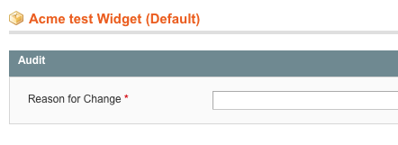
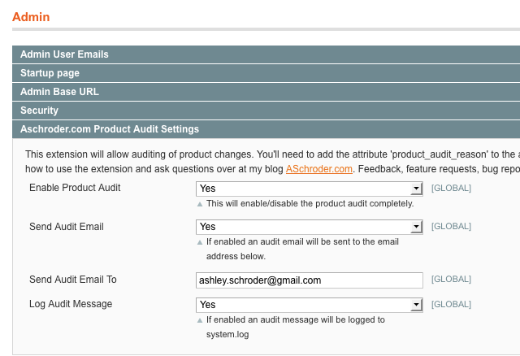

I wrote up an article over on MageBase this weekend expanding on a tip I got from the Magento Developers Paradise. In the process of writing it, I went through a worked example and as usual with articles you want to make sure the code actually runs too, so I installed it on my local test Magento. Having done all of this, it occurred to me that the only missing part of what I had done to make it into a usable extension was an implementation of this function:
class Aschroder_ProductAudit_Model_Entity_Attribute_Backend_Audit extends Mage_Eav_Model_Entity_Attribute_Backend_Abstract { protected function _afterSave() { // This is where we would perform the audit (or any other logic we wanted) // We could email the changes to a store admin, for example } } |
So I went ahead an put a simple little implementation in the custom backend model. The result is Magento Product Audit, a trivial little extension that will let you know when your products change, and who changed them.
I also allowed some basic configuration (log or email or both). Lastly, I have elected to make it a user_defined attribute. So once you install the extension the store admin will need to associate the attribute to any attribute sets they want to be audited. You can also choose to make the change reason required, or not required by editing the attribute directly. If it is required, any changes to products will need to be accompanied with a reason, which will be logged along with who made the change.
You can get the extension for manual installation or download it on Magento Connect. For more information about how it works, please see the next section.
How Magento Product Audit works
After initially installing the extension you will have a new attribute added to your store called ‘product_audit_reason’. You need to add this attribute to any attribute sets you wan to audit. You also need to decide whether the audit reason should be required – this can be changed when you edit the attribute.

Once you have the attribute assigned to a product you will need to configure it in System -> Configuration -> Admin is a new section where you can enable the extension, and also elect to send emails, log messages, or both.

You can then test the auditing by editing a product within the attribute set you added the audit attribute to, you should receive a log message, or an email depending on your configuration.
Any feedback/feature requests/bug reports invited, if there is interest in this extension I will flesh it out with the ability to diff the products and show changes.
Nice, as always. First idea that sprang to mind is probably not the intended direction, but I immediately thought ‘wouldn’t it be nice to log that product page’s performance/conversion up until that change so you can determine whether it has been beneficial’.
Within Magento, a simple product orders per pageview ratio could suffice, or interface it with the Analytics API and get the URL’s dollar value and log it against that time stamp. If there were ever then to come a reporting interface, it could highlight the conversion/revenue impact of such product changes.
But really, for mere auditing as a supervision project, it’s a great tool as it is.
@J.T. Good idea, so often we tweak the product description or name, but having a record of those changes over time and the associated conversion rate would be very interesting.
I guess technically we should be A/B testing the changes before we make them!
First of all thank you for this extention, going over code i came across // TODO: get the changes
did you get anywhere on this? and/or do you know how to get the old data? if you do i can write this section just don’t know how to get old data to compare the new data to.
Thanks
@Shawn haha – noone is supposed to look at the code! Checkout the $_origData array on the entity – beforeSave it contains the data that the object had when retrieved _I think_.
I started implementing the diff, but it get’s annoying dealing with object comparison.
If you do fancy implementing it, I’d be very grateful to you!
I agree with annoying, here is my small contribution
if($object->dataHasChangedFor(“name”)==1){
$object->getOrigData(“name”);
}
tested and works, just have to type in all the attributes you would like to check. thanks again for the extension. Maybe if I have some free time and feel in an array mood ill revisit this someday
Your solution is very intriguing and is partially what we are looking to for. We would like to send product attribute updates (selected ones) to customers who currently have that particular product on order, but not yet shipped (ie backordered status). How can we tie your system into a system that sends emails to customers and logs them in their order comment history? Do you know of such an extension of functionality within Magento? If not, is there code we can add that can do this?
Magento Product Audit
Is this extension is available for Magento 1.7?